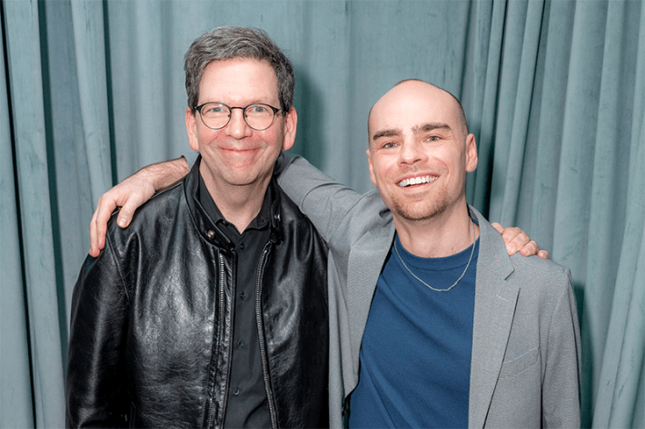

These tech bros, or whatever, think they understand everything. They understand nothing about what we do!”
That’s Professor Coffey, a scientist who studies aging, excoriating Silicon Valley billionaires who want to live forever. Coffey is a lead character in a new off-Broadway play, Spare Parts, by David J. Glass, a professor and medical scientist who researches aging at a biotech firm. Provocative and funny, even touching, Spare Parts dramatizes a rash of issues infecting aging research today: public funding getting the ax, libertarian billionaires sinking their riches into medical fountains of youth, and the temptations of scientists to cash in.
“There’s a lot of snake-oil salesmen in the aging field, people who promise you can live 200 years, or even forever,” Glass told me last week. I had asked him what sparked Spare Parts. “These outlandish claims bother me a lot and get in the way of the real science of aging. But the thing that really made me write the play was hearing these rich guys are literally paying for the blood of young people, to have it transferred into them. I felt that was a dramatic metaphor for what’s wrong with society.”
The play begins when Professor Coffey and his assistant arrive at the office of a 64-year-old billionaire, head of a global satellite company. The scientists hope to raise money for aging research from him. The plot turns when the professor’s assistant mentions parabiosis, splicing together the circulatory systems of a young and old animal. The assistant explains that experiments have shown that blood from young mice helped prolong the lifespan of older mice. The professor quickly warns that although that’s true, the blood component involved in helping the older mice has not been determined.
“Who cares what the component is, as long as the younger blood helps,” the billionaire says.
The real parabiotic experiments with mice started more than a decade ago with researchers at the University of California, Berkeley, and Stanford. Results showed the young mice blood boosted cell production in the muscles, livers, and brains of old mice. The utopian interpretation was the young blood reversed hallmarks of aging: the deterioration of cells in muscle tissue and organs. The dystopian version was the muscle and organ cells in young mice showed signs of going from spry to doddering.
“After those results, we weren’t all that interested in young blood as a medicine,” Michael Conboy, a lead scientist of the experiments told Nautilus in 2017. “We need to figure out what in old blood is so detrimental.”

CULTURE CLASH: Scientist and playwright David J. Glass (left) with director Michael Herwitz on the opening night of Spare Parts, Glass’ play about where the science of aging clashes with big money. Photo by Russ Rowland.
Scientists today have made advances in figuring out what makes blood components detrimental or beneficial in the spectrum of aging. One blood component is currently being tested in trials to treat cognitive impairment in Parkinson’s and Alzheimer’s diseases.
“The mouse experiments did show us that there is something you can reasonably work on to develop a medicine to counter age-related changes,” said Glass, whose specialty is isolating factors that cause us to lose muscle strength as we age. He is also the author of a book on designing proper science experiments, a subject about which he lectures at Harvard. But a few promising experiments don’t substantiate young blood as a medicine for aging. “That’s obviously insane,” Glass said.
In one of those signs of the times the play reflects, companies sprung up after the mice experiments to sell young-blood transfusions to clients—human clients, that is—for thousands of dollars a pop. The most notorious company was Ambrosia, named after the food of the gods that grants immortality. Its founder, Jesse Karmazin, a Stanford-trained physician, told Nautilus in 2017, “A fair number of patients are younger and healthier, and they want to stay that way.”
Young blood didn’t save Ambrosia, which died in 2019. The U.S. Food and Drug Administration took sight of such companies and declared “patients are being preyed upon by unscrupulous actors touting treatments of plasma from young donors as cures and remedies.”
That statement wasn’t the nail in the coffin of young blood clinics. Nor was a 2025 social-media message from Bryan Johnson, who spends millions a year on a fanatic regimen of supposed anti-aging practices and technologies—including transfusing his 17-year-old son Talmage’s blood plasma into his own. But after six transfusions, Johnson, who monitors in his body the many reputed biomarkers linked to longevity, said there were “no benefits detected.” The FDA and Bryan Johnson be damned, companies today like Next Health boast that “Therapeutic Plasma Exchange is currently our most advanced longevity treatment available.” The price: $10,000.
Read more: “The Immortality Hype”
In his 2025 book, Why We Die: The New Science of Aging and the Quest for Immortality, molecular biologist Venki Ramakrishnan, a Nobel laureate in chemistry, underscores the promise of blood therapy as he dismisses the current hype about plasma transfusions on longevity. He takes sight of Silicon Valley and the neon names who have either expressed interest in aging research or invested millions in it—Elon Musk, Peter Thiel, Larry Page, Sergey Brin, Jeff Bezos, and Mark Zuckerberg—and delivers this apercu: “When they were young, they wanted to be rich, and now that they’re rich, they want to be young. But youth is the one thing that they cannot instantly buy.”
Ramakrishnan goes on to write that “if tech billionaires are interested in curing aging in a hurry, many scientists are only too happy to enable them.” In Spare Parts, Glass plants his characters in this ethical swamp. The billionaire in the play says he will pay both the professor and his assistant, Jeff, $1 million a year in salaries if they hook him up to a young blood donor. The professor is offended.
“The money doesn’t mean anything Jeff, if it stops us from doing what we should be doing,” the professor says. “All these great scientists have been taking cash from these guys and then working on nonsense. Nonsense. I want to work on what really matters—so we’ll make progress.”
When Jeff mentions the parabiotic experiment on humans could lead to a paper in Nature, the professor pauses and says, “Of course, if we did get to the paper stage, I’d be senior author.”
Earlier, the professor had explained that a parabiotic experiment would be scientifically valuable only if the mice were identical, “so that if you treat one group with a drug, for example, to see what happens, you can have another group of genetically identical animals who are left untreated, as controls—comparators.”
A plot twist reveals the billionaire’s young executive assistant is genetically identical to him—a clone—making him the perfect blood donor. The billionaire had created a clone of himself for “spare parts,” he explains, “in case I needed something.” Now the professor no longer views parabiosis as nonsense. “I’m actually willing to go ahead now, given the situation,” he says. “I never thought we’d have the necessary comparator for a human experiment. This is amazing.”
I asked Glass what he wanted audiences to make of the professor’s decision. Clearly, cloning another human being for your own salvage is not a good thing. He was showing scientists could be complicit.
Putting his dramatic license aside for a moment, Glass said, he wanted to show his professor character was stuck in a very real predicament for scientists. “He’s been applying for grants and all of a sudden they’re not available. He’s trapped by the system, or lack of a system.” The real cuts to the National Institutes of Health’s budget in the past year have been a terrible blow to research, Glass said, not to mention dispiriting to his student scientists, fearing where they will find a job. Glass decried the specter of science “being run by the whims of our billionaires, as opposed to having a robust public funding of research that everyone has access to do.”
Glass continued. “One thing that really bothers me about a lot of popular culture is scientists are always painted as the enemy or the bad guys,” he said. “I wanted to show scientists are not the bad guys. Scientists are constrained by what’s happening. The professor is constrained by happenstance to do something that he has said is ridiculous. But this is the way for him to get funding for what he actually wants to do.”
Even so, I asked, wasn’t the professor being a hypocrite? “Well, I’ll leave that to you to decide,” Glass said.
Fair enough. After all, Glass is wearing two hats: playwright and scientist. He trained in theater at New York’s Manhattan Class Company and Playwrights Horizon. His previous play, Love + Science, produced in 2023 in New York, circled around two young virologists who fall in love in the 1980s at the beginning of the AIDS crisis. A love affair between the professor’s assistant and the billionaire’s assistant, reeling from the revelation about his identity, also flares in Spare Parts, giving the play an existential sting alongside the science—an admirable feat, I told Glass, weaving science into art.
Glass sounded pleased. “Scientists fall in love, they talk about what makes a person a person,” he said. “We want to do important work, we have egos, we want to get credit in publishing.” As both a scientist and playwright, he said, “I want to show that scientists are also human beings.”
Spare Parts runs through April 10 at Theatre Row, 410 West 42nd St., New York. 
Lead photo: Jonny-James Kajoba and Michael Genet in Spare Parts. As their characters Ivan Shelley, an executive assistant, and Zeit Smith, a billionaire, they undergo a blood exchange. Photo by Russ Rowland
References
- Original Article: https://nautil.us/money-cant-buy-you-youth-1278888/